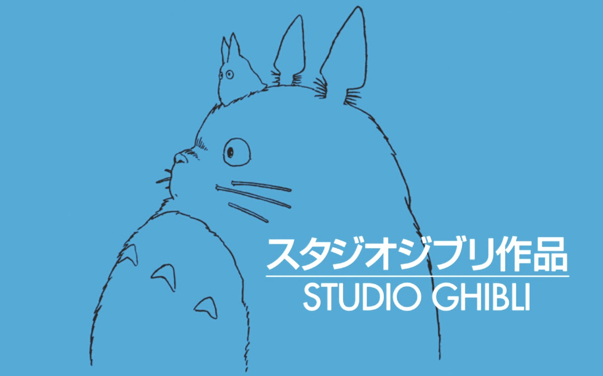

<!--<app-navbar></app-navbar>-->
<Header>
  
</Header>
<nav class = "principal">
  <ul>
    <li>
      <a [routerLink]="['/sobre']" alt="link para  a página sobre o site">Sobre </a>
    </li>
   <!--<li>
    <a [routerLink]="['/personagens']"> Personagens    </a>
   </li>
    --><li>
      <a [routerLink]="['/filmes']"> Filmes </a>
    </li>
    <li>
      <a [routerLink]="['/criadora']"> Criadora </a>
    </li>
    <!--<li>
      <a [routerLink]="['/chapeu']"> Chapéu Seletor </a>
    </li>-->
  </ul>

</nav>


<link rel="stylesheet" href="/src/styles.css">

<router-outlet></router-outlet>
